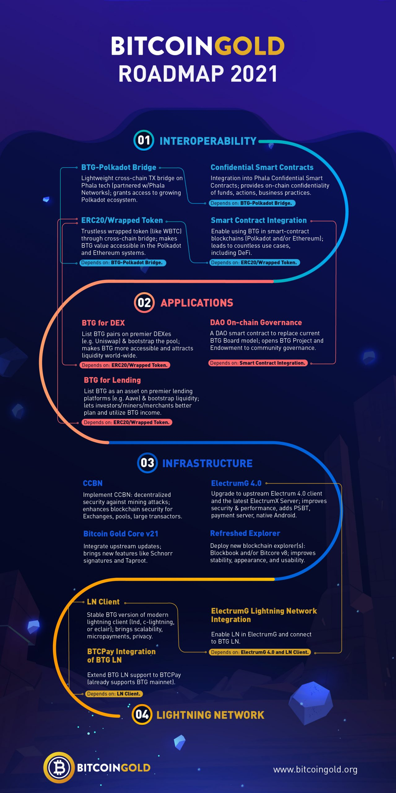

<?xml version="1.0" encoding="UTF-8"?><rss version="2.0"
	xmlns:content="http://purl.org/rss/1.0/modules/content/"
	xmlns:wfw="http://wellformedweb.org/CommentAPI/"
	xmlns:dc="http://purl.org/dc/elements/1.1/"
	xmlns:atom="http://www.w3.org/2005/Atom"
	xmlns:sy="http://purl.org/rss/1.0/modules/syndication/"
	xmlns:slash="http://purl.org/rss/1.0/modules/slash/"
	>

<channel>
	<title>Bitcoin Gold</title>
	<atom:link href="index.html" rel="self" type="application/rss+xml" />
	<link></link>
	<description>Make Bitcoin decentralized again</description>
	<lastBuildDate>Wed, 19 May 2021 00:00:07 +0000</lastBuildDate>
	<language>en-US</language>
	<sy:updatePeriod>
	hourly	</sy:updatePeriod>
	<sy:updateFrequency>
	1	</sy:updateFrequency>
	<generator>https://wordpress.org/?v=5.5.14</generator>

<image>
	<url>/wp-content/uploads/cropped-fav-icon-1-32x32.png</url>
	<title>Bitcoin Gold</title>
	<link></link>
	<width>32</width>
	<height>32</height>
</image> 
	<item>
		<title>BTG AMA</title>
		<link>/btg-ama/</link>
		
		<dc:creator><![CDATA[Edward Iskra]]></dc:creator>
		<pubDate>Tue, 18 May 2021 21:46:10 +0000</pubDate>
				<category><![CDATA[Announcements]]></category>
		<category><![CDATA[General]]></category>
		<category><![CDATA[Progress Update]]></category>
		<category><![CDATA[Updates]]></category>
		<guid isPermaLink="false">/?p=41207</guid>

					<description><![CDATA[Our first BTG-hosted AMA – Join us for an hour on Saturday in our Discord at 13:00 UTC. That's 9:00 NYC, 14:00 London, 16:00 Moscow, 21:00 Beijing. Join ahead of time to submit your questions to be answered in the first half hour; the second half will be for followups and new questions.]]></description>
										<content:encoded><![CDATA[<div class="et_pb_section et_pb_section_0 et_section_regular" >
				
				
				
				
					<div class="et_pb_row et_pb_row_0">
				<div class="et_pb_column et_pb_column_4_4 et_pb_column_0  et_pb_css_mix_blend_mode_passthrough et-last-child">
				
				
				<div class="et_pb_module et_pb_text et_pb_text_0  et_pb_text_align_left et_pb_bg_layout_light">
				
				
				<div class="et_pb_text_inner"><p>April brought a variety of news for the BTG community. Some, we did not plan – like when Binance added new BTG trading pairs, and then added BTG margin trading. Others were totally our doing – like when we published our updated <a href="../btg-roadmap-2021/index.html">Roadmap for 2021</a>.</p>
<p>The new Roadmap has generated a lot of questions&#8230; and we&#8217;d like to provide a lot of answers. So, to make it easier for folks, we&#8217;re holding our first self-hosted AMA on our Discord server this upcoming Saturday.</p>
<p>&nbsp;</p>
<h2 style="text-align: center;">Join us Saturday for an hour at 13:00 UTC and ask us anything!</h2>
<h4 style="text-align: center;">That&#8217;s 9:00 NYC, 14:00 London, 16:00 Moscow, 21:00 Beijing.</h4></div>
			</div> <!-- .et_pb_text -->
			</div> <!-- .et_pb_column -->
				
				
			</div> <!-- .et_pb_row --><div class="et_pb_row et_pb_row_1">
				<div class="et_pb_column et_pb_column_4_4 et_pb_column_1  et_pb_css_mix_blend_mode_passthrough et-last-child">
				
				
				<div class="et_pb_button_module_wrapper et_pb_button_0_wrapper et_pb_button_alignment_center et_pb_module ">
				<a class="et_pb_button et_pb_button_0 et_pb_bg_layout_light" href="https://discord.gg/fhXgzCJpPr" target="_blank">Click here to Join the Discord!</a>
			</div>
			</div> <!-- .et_pb_column -->
				
				
			</div> <!-- .et_pb_row --><div class="et_pb_row et_pb_row_2">
				<div class="et_pb_column et_pb_column_4_4 et_pb_column_2  et_pb_css_mix_blend_mode_passthrough et-last-child">
				
				
				<div class="et_pb_module et_pb_text et_pb_text_1  et_pb_text_align_left et_pb_bg_layout_light">
				
				
				<div class="et_pb_text_inner"><p>You can also join us ahead of time to submit questions to be answered in the first half hour; the second half will be for followups and new questions.</p>
<p>&nbsp;</p>
<p>Comments or questions? <a href="https://forum.btgofficial.org/t/btg-ama-saturday/5751">Continue the discussion on our Forum</a>.</p></div>
			</div> <!-- .et_pb_text -->
			</div> <!-- .et_pb_column -->
				
				
			</div> <!-- .et_pb_row -->
				
				
			</div> <!-- .et_pb_section -->
<span class="et_bloom_bottom_trigger"></span>]]></content:encoded>
					
		
		
			</item>
		<item>
		<title>BTG Roadmap 2021</title>
		<link>/btg-roadmap-2021/</link>
		
		<dc:creator><![CDATA[Edward Iskra]]></dc:creator>
		<pubDate>Tue, 27 Apr 2021 00:30:58 +0000</pubDate>
				<category><![CDATA[Announcements]]></category>
		<category><![CDATA[Development]]></category>
		<category><![CDATA[Press Release]]></category>
		<category><![CDATA[Updates]]></category>
		<guid isPermaLink="false">/?p=41165</guid>

					<description><![CDATA[The BTG project lays out primary objectives for 2021 and beyond, showing some changes in direction, but continuing on prior commitments. ]]></description>
										<content:encoded><![CDATA[<p><div class="et_pb_section et_pb_section_1 et_section_regular" >
				
				
				
				
					<div class="et_pb_row et_pb_row_3">
				<div class="et_pb_column et_pb_column_4_4 et_pb_column_3  et_pb_css_mix_blend_mode_passthrough et-last-child">
				
				
				<div class="et_pb_module et_pb_text et_pb_text_2  et_pb_text_align_left et_pb_bg_layout_light">
				
				
				<div class="et_pb_text_inner"><h2><span style="font-weight: 400;"></span></h2>
<h2><span style="font-weight: 400;">The Course Ahead<br /></span></h2>
<p><span style="font-weight: 400;">At inception, Bitcoin Gold was focused on providing a cryptocurrency in the Bitcoin model, but which was more decentralized for miners. Today, our focus is on making BTG a more trustless and useful cryptocurrency for everyone, and that change in focus is evident in our current development roadmap. </span></p>
<p><span style="font-weight: 400;">While we&#8217;ve always been broadly pro-crypto and believed in <em>collaboration</em>, the push to improve usability and usefulness entails a push towards <em>interoperability</em>. This means adapting so that BTG can be used with the best smart contract protocols; it means pooling security from bigger chains and offering it to smaller chains; it means making BTG, and BTG&#8217;s value, accessible throughout the smart-contract ecosystem, leveraging their security models as well as their technical capabilities: it means creating more value for everyone. </span></p>
<p><span style="font-weight: 400;">The development items on our current roadmap fall into four general areas:</span></p>
<p><span style="font-weight: 400;"><strong>Interoperability:</strong> things which grant or enhance the ability for BTG to interact bidirectionally with other blockchains and blockchain ecosystems, like Polkadot and Ethereum. Work on the bridge to Phala Network is already underway.</span></p>
<p><span style="font-weight: 400;"><strong>Applications:</strong> things which can be done after that interoperability is established. These hint at what&#8217;s possible, but need to wait until Interoperability comes to life. One notable item here: we plan to gradually shift from our traditional Board-based governance structure to a modern DAO-based model, which we expect to bring new people into the governance process and to help decentralize management of the chain and the project.</span></p>
<p><span style="font-weight: 400;"><strong>Infrastructure:</strong> these are core items in the BTG tech stack which need updates and refreshers. These are already underway, and some are very near completion, like new version(s) of our explorers, and a very-updated version of ElectrumG.</span></p>
<p><span style="font-weight: 400;"><strong>Lightning Network:</strong> establishing a robust and effective LN as a layer-2 solution is still very much on our development agenda, although current transaction volumes and fees don&#8217;t <em>necessitate </em>a solution at the moment. We want to build up the infrastructure and, most importantly, the user tool set, for an effective and easy-to-use LN before it becomes a critical need to alleviate transaction fee concerns and allow people to continue to make micropayments.<br /></span></p>
<p><span style="font-weight: 400;"></span></p>
<p><span style="font-weight: 400;"><strong>Here are all the things we&#8217;re currently doing or planning to do:</strong> </span></p>
<p><span style="font-weight: 400;"></span></p>
<p><b></b></p></div>
			</div> <!-- .et_pb_text --><div class="et_pb_module et_pb_image et_pb_image_0">
				
				
				<span class="et_pb_image_wrap "></span>
			</div><div class="et_pb_module et_pb_text et_pb_text_3  et_pb_text_align_left et_pb_bg_layout_light">
				
				
				<div class="et_pb_text_inner"><h2><span style="font-weight: 400;"></span></h2>
<p><span style="font-weight: 400;"></span></p>
<p><span style="font-weight: 400;"></span></p>
<p><span style="font-weight: 400;"></span></p>
<p><span style="font-weight: 400;"></span></p>
<h2><span style="font-weight: 400;">Interoperability</span></h2>
<p><b>BTG-Polkadot Bridge: </b>w<span style="font-weight: 400;">e&#8217;re building a lightweight BTG-Polkadot Bridge based on a Phala Bridge solution, built in partnership with <a href="https://phala.network/">Phala Network</a>. This will enable cross-chain transactions between BTG and Phala, and leads to BTG gaining access to advanced blockchain functions like smart contracts, DeFi protocols, on-chain governance, and eventually connect to external blockchains like Ethereum.</span></p>
<p><b>Bridged ERC20/Wrapped Token: </b>w<span style="font-weight: 400;">e&#8217;re creating a trustless wrapped token (like WBTC) through the cross-chain bridge, and making it accessible in the Polkadot and Ethereum DeFi ecosystems. This d</span><span style="font-weight: 400;">epends on the </span><b>BTG-Polkadot Bridge.</b></p>
<p><b>Smart Contract Integration: </b>w<span style="font-weight: 400;">e&#8217;ll connect BTG to smart-contract-enabled blockchains on Polkadot and / or Ethereum, allowing wide use cases to be developed for BTG</span><span style="font-weight: 400;">. This d</span><span style="font-weight: 400;">epends on the </span><b>Bridged ERC20/Wrapped Token.</b></p>
<p><b>Confidential Smart Contracts: </b>i<span style="font-weight: 400;">ntegrating with Phala Network&#8217;s Confidential Smart Contracts to provide on-chain confidentiality</span><span style="font-weight: 400;">. This d</span><span style="font-weight: 400;">epends on the </span><b>BTG-Polkadot Bridge.</b></p>
<h2><span style="font-weight: 400;">Applications</span></h2>
<p><b>BTG for DEX: </b><span style="font-weight: 400;">we&#8217;ll work to establish BTG trading pairs on a well-known DEX (e.g. Uniswap) and bootstrap liquidity, making BTG more accessible and attracting more liquidity around the world</span><span style="font-weight: 400;">. This d</span><span style="font-weight: 400;">epends on the </span><b>Bridged ERC20/Wrapped Token.</b></p>
<p><b>BTG for Lending: </b><span style="font-weight: 400;">we&#8217;ll list BTG as a lending asset on well-known lending platforms (e.g. Aave) and bootstrap liquidity. This will empower investors and miners to better plan and utilize their BTG income</span><span style="font-weight: 400;">. This d</span><span style="font-weight: 400;">epends on the </span><b>Bridged ERC20/Wrapped Token.</b></p>
<p><b>DAO On-chain Governance: </b>we&#8217;ll b<span style="font-weight: 400;">uild a DAO structure as a smart contract to replace the current governance model. This will take time, but the intent is to fully move the Endowment and any future project income to the DAO for budget management. We also hope for this to open governance to the community to participate in development, decision making, and spending actions</span><span style="font-weight: 400;">. This d</span><span style="font-weight: 400;">epends on </span><b>Smart Contract Integration.</b></p>
<h2><span style="font-weight: 400;">Infrastructure</span></h2>
<p><b>CCBN: </b>we&#8217;re committed to fully <span style="font-weight: 400;">Implementing CCBN – first as an add-on script, and later as part of core consensus code, deployed first to testnet and then to mainnet. CCBN is a decentralized approach to thwart secret mining attacks by notarizing blocks to independent blockchains, providing a way to resolve chain splits in favor of honest mining, which will greatly enhance on-chain security.</span> </p>
<p><b>ElectrumG 4.0: </b>it&#8217;s time to u<span style="font-weight: 400;">pgrade to the upstream Electrum 4.0 client and the latest ElectrumX Server with improved security, performance, and more features, including: PSBT support, payment server, native Android support.</span> </p>
<p><b>Bitcoin Gold Core v21: </b>continuing to f<span style="font-weight: 400;">ollow upstream updates brings in value bugfixes and security improvements, and also introduces new features including schnorr signatures and taproot.</span></p>
<p><b>Refreshed Explorer: </b>we&#8217;re d<span style="font-weight: 400;">eploying a new blockchain explorer (Blockbook and / or Bitcore v8) for improved stability, appearance, and usability.</span></p>
<h2><span style="font-weight: 400;">Lightning Network </span></h2>
<p><b>LN Client: </b>we&#8217;ll d<span style="font-weight: 400;">eploy a stable BTG version of a mature lightning client to testnet and then mainnet (lnd, c-lightning, and/or eclair.) Even if fees don&#8217;t demand an LN infrastructure, a Lightning Network can still deliver greater efficiency on transactions.<br /></span></p>
<p><b>ElectrumG Lightning Network Integration: </b>after deploying new Lightning Network clients, we can e<span style="font-weight: 400;">nable Lighting Network within ElectrumG and connect it the Bitcoin Gold Lightning Network for near-instant transactions</span><span style="font-weight: 400;">. This d</span><span style="font-weight: 400;">epends on both </span><b>ElectrumG 4.0 </b><span style="font-weight: 400;">and the </span><b>LN Client.</b></p>
<p><b>BTCPay Integration of BTG Lightning Network: </b><span style="font-weight: 400;">BTCPay, the best decentralized payment gateway, already supports BTG, so extending BTCPay to support BTG LN is next</span><span style="font-weight: 400;">. This d</span><span style="font-weight: 400;">epends on the </span><b>LN Client.</b></p>
<p><b></b></p>
<p style="text-align: center;"><a href="https://forum.btgofficial.org/t/bitcoin-gold-roadmap-2021/5638"><b>continue the discussion on the Bitcoin Gold Forum here</b></a></p></div>
			</div> <!-- .et_pb_text -->
			</div> <!-- .et_pb_column -->
				
				
			</div> <!-- .et_pb_row -->
				
				
			</div> <!-- .et_pb_section --><div class="et_pb_section et_pb_section_2 et_section_regular" >
				
				
				
				
					<div class="et_pb_row et_pb_row_4">
				<div class="et_pb_column et_pb_column_4_4 et_pb_column_4  et_pb_css_mix_blend_mode_passthrough et-last-child et_pb_column_empty">
				
				
				
			</div> <!-- .et_pb_column -->
				
				
			</div> <!-- .et_pb_row -->
				
				
			</div> <!-- .et_pb_section --></p>
<span class="et_bloom_bottom_trigger"></span>]]></content:encoded>
					
		
		
			</item>
		<item>
		<title>Phala Network Partners with Bitcoin Gold</title>
		<link>/phala-network-partners-with-bitcoin-gold/</link>
		
		<dc:creator><![CDATA[Edward Iskra]]></dc:creator>
		<pubDate>Sat, 27 Mar 2021 01:00:37 +0000</pubDate>
				<category><![CDATA[Announcements]]></category>
		<category><![CDATA[Press Release]]></category>
		<guid isPermaLink="false">/?p=41127</guid>

					<description><![CDATA[Phala Network Partners with Bitcoin Gold to develop Lightweight Cross-Chain Bridges to the Polkadot Ecosystem for BTG and other Bitcoin-Based Chains. Bitcoin Gold (BTG) and Phala Network are happy to announce a project partnership to develop lightweight, low-cost, trustless bridges by leveraging Phala's TEE-based confidential computing technology. BTG will be the first asset bridged...]]></description>
										<content:encoded><![CDATA[<div class="et_pb_section et_pb_section_3 et_section_regular" >
				
				
				
				
					<div class="et_pb_row et_pb_row_5">
				<div class="et_pb_column et_pb_column_4_4 et_pb_column_5  et_pb_css_mix_blend_mode_passthrough et-last-child">
				
				
				<div class="et_pb_module et_pb_text et_pb_text_4  et_pb_text_align_left et_pb_bg_layout_light">
				
				
				<div class="et_pb_text_inner"><h3 data-pm-slice="1 1 &#091;&#093;"></h3>
<h3 data-pm-slice="1 1 &#091;&#093;">Phala Network Partners with Bitcoin Gold to develop Lightweight Cross-Chain Bridges to the Polkadot Ecosystem for BTG and other Bitcoin-Based Chains</h3>
<p>Bitcoin Gold (BTG) and Phala Network are happy to announce a project partnership to develop lightweight, low-cost, trustless bridges by leveraging Phala&#8217;s TEE-based confidential computing technology. BTG will be the first asset bridged, but the project is being built to work with tokens from any blockchain based on bitcoin&#8217;s underlying technology, including LTC, BCH, DOGE, BSV, and other long-tail offshoots of Bitcoin. This will provide a path for the liquidity of the $36 billion market value of this coin family into the Polkadot ecosystem for use in smart contracts, DeFi, DEXes, and more.</p>
<p>The joint Phala/BTG team&#8217;s confidence in this approach rests on three pillars:</p>
<ul data-pm-slice="3 3 &#091;&#093;">
<li>
<p>open-source bridges like Interlay&#8217;s PolkaBTC have been demonstrated, but require deep-pocketed backers for security collateral</p>
</li>
<li>
<p>Phala Network has demonstrated the ability to deliver security and confidentiality through a network of TEEs</p>
</li>
<li>
<p>Hang Yin, a co-founder of Phala Network, is also the Lead Developer (and a co-founder) of Bitcoin Gold, bringing deep knowledge of bitcoin-based blockchain tech to the joint project&#8217;s leadership</p>
</li>
</ul>
<p>BTG and Phala look forward to collaborating and to helping bring this exciting new technology to BTG investors and hodlers as well as extending this open source technology to other coin projects.</p>
<h3><span class="heading-content">About Bitcoin Gold (BTG)</span></h3>
<p>BTG is a cryptocurrency with Bitcoin fundamentals, mined on common GPUs instead of specialty ASICs. BTG enhances and extends the crypto space with a blockchain closely compatible with Bitcoin (with SegWit and Lightning Network) but without using resources like Bitcoin hash power or vying for the “real Bitcoin” title.</p>
<p>Bitcoin Gold is an open-source project by the community for the community. Our code is freely available on Github, where you can follow or contribute to development. Many coin-related services also provide API support and plugins for developers to use.</p>
<p>Learn more about Bitcoin Gold at: <a href="../index.html" rel="noopener noreferrer nofollow">/</a></p>
<h3><span class="heading-content">About Phala Network</span></h3>
<p>Phala Network tackles the issue of trust in the computation cloud.</p>
<p>This blockchain is a trustless computation platform which enables massive cloud processing without sacrificing data confidentiality. Built around TEE-based privacy technology already embedded into modern processors, Phala Network&#8217;s distributed computing cloud is versatile and confidential. By separating the consensus mechanism from computation, Phala ensures processing power is highly scalable. Combined, this creates the infrastructure for a powerful, secure, and scalable trustless computing cloud.</p>
<p>As a member parachain of the Polkadot cross-chain ecosystem, Phala will be able to provide computing power to other blockchain applications while protecting the data layer, enabling possibilities like privacy-protected DeFi trading positions and transaction history, co-computing DID confidential data, developing light-node cross-chain bridges, and more.</p>
<p>On-chain services currently being developed on Phala Network include Web3 Analytics: high-performance smart contracts from Phala enable highly concurrent mass data analytics with privacy, paving the way for an alternative to Google Analytics that inherently respects individual confidentiality.</p>
<p>Learn more about Phala Network at: <a href="https://phala.network/" rel="noopener noreferrer nofollow">https://phala.network/</a></p>
<p>&nbsp;</p>
<p style="text-align: center;"><a href="https://forum.btgofficial.org/t/phala-network-partners-with-bitcoin-gold/5459">continue the discussion on our Forum here</a></p></div>
			</div> <!-- .et_pb_text -->
			</div> <!-- .et_pb_column -->
				
				
			</div> <!-- .et_pb_row -->
				
				
			</div> <!-- .et_pb_section -->
<span class="et_bloom_bottom_trigger"></span>]]></content:encoded>
					
		
		
			</item>
		<item>
		<title>Things are Brewing at BTG</title>
		<link>/things-are-brewing/</link>
		
		<dc:creator><![CDATA[Edward Iskra]]></dc:creator>
		<pubDate>Wed, 03 Mar 2021 11:00:21 +0000</pubDate>
				<category><![CDATA[Announcements]]></category>
		<category><![CDATA[General]]></category>
		<category><![CDATA[Updates]]></category>
		<guid isPermaLink="false">/?p=41094</guid>

					<description><![CDATA[You can expect to see regular updates published in the coming weeks on various projects that are underway with BTG. You’ll also see updates and recaps about what we’ve been through and accomplished in the many preceding months.]]></description>
										<content:encoded><![CDATA[<div class="et_pb_section et_pb_section_4 et_section_regular" >
				
				
				
				
					<div class="et_pb_row et_pb_row_6">
				<div class="et_pb_column et_pb_column_4_4 et_pb_column_6  et_pb_css_mix_blend_mode_passthrough et-last-child">
				
				
				<div class="et_pb_module et_pb_text et_pb_text_5  et_pb_text_align_left et_pb_bg_layout_light">
				
				
				<div class="et_pb_text_inner"><p>Hi!</p>
<p>We haven’t published in a while. It was a very long crypto winter, but our hibernation has come to an end.</p>
<p><strong>We want you to know that we’ve been more active over the past year than a lot of people think.</strong></p>
<p>For example, some of you know that BTG was used in 51% attacks again in January of 2020… but very few know that attacks continued for many months, and that those subsequent attacks failed because the BTG miners and community defeated them! And few realize that we’ve rolled out new technology that better protects our chain. The BTG project has been through a lot and has come out stronger for it – and we will be getting the details of that story out in the coming weeks.</p>
<p>We’ve also got some truly exciting new development brewing with new partners which we’re itching to share. You can expect to see regular updates published in the coming weeks on various projects that are underway with BTG, as well as recaps about what we’ve been through and accomplished in the many preceding months.</p>
<p>In light of all our new developments, we’re also working on a fully updated roadmap to share in the coming weeks.</p>
<p>We’re really looking forward to sharing all we’ve done and all we’re doing – BTG is building and growing, and we want you to know it!</p>
<p>&nbsp;</p></div>
			</div> <!-- .et_pb_text -->
			</div> <!-- .et_pb_column -->
				
				
			</div> <!-- .et_pb_row -->
				
				
			</div> <!-- .et_pb_section -->
<span class="et_bloom_bottom_trigger"></span>]]></content:encoded>
					
		
		
			</item>
		<item>
		<title>BTG Core Wallet v0.17.3</title>
		<link>/core-wallet-v17-3/</link>
		
		<dc:creator><![CDATA[Edward Iskra]]></dc:creator>
		<pubDate>Mon, 03 Aug 2020 20:00:58 +0000</pubDate>
				<category><![CDATA[Announcements]]></category>
		<category><![CDATA[Development]]></category>
		<category><![CDATA[Press Release]]></category>
		<category><![CDATA[Technical]]></category>
		<category><![CDATA[Updates]]></category>
		<guid isPermaLink="false">/?p=40893</guid>

					<description><![CDATA[]]></description>
										<content:encoded><![CDATA[<div class="et_pb_section et_pb_section_5 et_section_regular" >
				
				
				
				
					<div class="et_pb_row et_pb_row_7">
				<div class="et_pb_column et_pb_column_4_4 et_pb_column_7  et_pb_css_mix_blend_mode_passthrough et-last-child">
				
				
				<div class="et_pb_module et_pb_text et_pb_text_6  et_pb_text_align_left et_pb_bg_layout_light">
				
				
				<div class="et_pb_text_inner"><h1><span style="font-size: x-large;"><strong>We’re thrilled to announce BTG Core wallet v0.17.3!</strong></span></h1>
<p>This important release increases the safety of the BTG blockchain against deep-chain reversions by introducing rolling checkpoint finalization.</p>
<p>You can download the latest release here:</p></div>
			</div> <!-- .et_pb_text -->
			</div> <!-- .et_pb_column -->
				
				
			</div> <!-- .et_pb_row --><div class="et_pb_row et_pb_row_8">
				<div class="et_pb_column et_pb_column_4_4 et_pb_column_8  et_pb_css_mix_blend_mode_passthrough et-last-child">
				
				
				<div class="et_pb_button_module_wrapper et_pb_button_1_wrapper et_pb_button_alignment_center et_pb_module ">
				<a class="et_pb_button et_pb_button_1 et_pb_bg_layout_light" href="../downloads/index.html">DOWNLOADS</a>
			</div>
			</div> <!-- .et_pb_column -->
				
				
			</div> <!-- .et_pb_row --><div class="et_pb_row et_pb_row_9">
				<div class="et_pb_column et_pb_column_4_4 et_pb_column_9  et_pb_css_mix_blend_mode_passthrough et-last-child">
				
				
				<div class="et_pb_module et_pb_text et_pb_text_7  et_pb_text_align_left et_pb_bg_layout_light">
				
				
				<div class="et_pb_text_inner"><div class="cooked">
<p>Typical users can shut down the app, install the new version, and restart the app without issue, but it’s always best to backup everything, especially wallet.dat files, first. The <a href="https://github.com/BTCGPU/BTCGPU/wiki/Release-Notes-v0.17.3">v0.17.3 release notes are here</a>.</p>
<p><em>Version v0.17.3 is a direct drop-in replacement for v0.17.1 or v0.17.2, but before upgrading from an older version like v0.15.2, exchanges, services, and anyone who writes code against the API should should check the <a href="https://github.com/BTCGPU/BTCGPU/wiki/Release-Notes-v0.17.1">full release notes for v0.17.1</a> as some APIs are deprecated and there are changes to way the config file is read.</em></p>
<h3>Notable Changes</h3>
<p><strong>Rolling Checkpoint Finalization</strong></p>
<p>A <em>finalized</em> block is one which the system considers non-replaceable. If a node receives a sudden chain of blocks which is a &#8220;fork&#8221; of the blockchain going back further than the last finalized block, the fork will be rejected. This makes long attack forks impossible.</p>
<p>Every time a new block comes in, the node will check if a previous block is newly eligible to be finalized. To ensure normal chain function and prevent potential problems, blocks aren&#8217;t eligible until some time passes (see the <a href="https://github.com/BTCGPU/BTCGPU/wiki/Release-Notes-v0.17.3">release notes</a> for full details.) This acts like a traditional bitcoin checkpoint, but over time the finalized block rolls forward, hence the name. <strong>The important part is that deep reorganizations become impossible.</strong></p>
<p>Most transactions &#8211; over 60% &#8211; will be in a finalized block when they have just 10 confirmations, but under some rare conditions, it may take 20 confirmations or more. (In 99.92% of the past 100,000 blocks, finalization would have happened by the 19th confirmation.)</p>
<p><strong>RPC Changes</strong></p>
<p>The new RPC call <strong>getfinalizedblockhash</strong> will report the blockhash of the most recent finalized block so that developers can code new behavior around this security information. </p>
<p>Looking forward as always,<br /> <em>The Bitcoin Gold Organization</em></p>
</div>
<p>&nbsp;</p>
<p>&nbsp;</p>
<hr />
<h3 id="reply-title" class="comment-reply-title">Join the discussion and comment on this post <a href="https://forum.btgofficial.org/t/btg-core-wallet-v0-17-3/4776">at forum.btgofficial.org</a></h3></div>
			</div> <!-- .et_pb_text -->
			</div> <!-- .et_pb_column -->
				
				
			</div> <!-- .et_pb_row -->
				
				
			</div> <!-- .et_pb_section -->
<span class="et_bloom_bottom_trigger"></span>]]></content:encoded>
					
		
		
			</item>
		<item>
		<title>Emergency update 0.17.2</title>
		<link>/emergency-update-0-17-2/</link>
		
		<dc:creator><![CDATA[CryptoDJ]]></dc:creator>
		<pubDate>Fri, 10 Jul 2020 20:33:46 +0000</pubDate>
				<category><![CDATA[Development]]></category>
		<category><![CDATA[Press Release]]></category>
		<category><![CDATA[Technical]]></category>
		<category><![CDATA[Updates]]></category>
		<guid isPermaLink="false">/?p=40855</guid>

					<description><![CDATA[]]></description>
										<content:encoded><![CDATA[<div class="et_pb_section et_pb_section_6 et_section_regular" >
				
				
				
				
					<div class="et_pb_row et_pb_row_10">
				<div class="et_pb_column et_pb_column_4_4 et_pb_column_10  et_pb_css_mix_blend_mode_passthrough et-last-child">
				
				
				<div class="et_pb_button_module_wrapper et_pb_button_2_wrapper et_pb_button_alignment_center et_pb_module ">
				<a class="et_pb_button et_pb_button_2 et_pb_bg_layout_light" href="../downloads/index.html">DOWNLOADS</a>
			</div>
			</div> <!-- .et_pb_column -->
				
				
			</div> <!-- .et_pb_row --><div class="et_pb_row et_pb_row_11">
				<div class="et_pb_column et_pb_column_4_4 et_pb_column_11  et_pb_css_mix_blend_mode_passthrough et-last-child">
				
				
				<div class="et_pb_module et_pb_text et_pb_text_8  et_pb_text_align_left et_pb_bg_layout_light">
				
				
				<div class="et_pb_text_inner"><p><b>CRITICAL MESSAGE FROM BTG TEAM TO ALL POOLS, EXCHANGES, WALLETS, SERVICES, AND COMMUNITY RUNNING NODES</b></p>
<p>&nbsp;</p>
<p><b>Please immediately upgrade your BTG Core full nodes to version 0.17.2, published July 2, 2020.</b></p>
<p><span style="color: #662525;"><strong>UPDATE: if you did not upgrade prior to July 10 at 14:00 UTC, you will also want to perform the command:</strong></span><b><br /></b><span style="color: #662525;"><strong>invalidateblock 00000000635620f22ba8694aea532d51619f8cd060f4e42e85db3cb3a5d1c29c</strong></span><b><br /></b></p>
<p>&nbsp;</p>
<p><b>HOW TO UPGRADE:</b><span style="font-weight: 400;"><br /></span><span style="font-weight: 400;"><br /></span><span style="font-weight: 400;">1. You can use the <a href="https://github.com/BTCGPU/BTCGPU/releases/tag/v0.17.2"><b>pre-compiled binaries on Github</b></a>, <a href="https://github.com/BTCGPU/BTCGPU/releases/tag/v0.17.2">https://github.com/BTCGPU/BTCGPU/releases/tag/v0.17.2</a>, or use the DOWNLOADS link you see above. Simply shut down your node, install the latest version, and start back up.<br /></span></p>
<p><span style="font-weight: 400;">2. Manually upgrade from the latest code on the BTCGPU Github </span><a href="https://github.com/BTCGPU/BTCGPU/releases/tag/v0.17.2"><b>v0.17.2 tag</b></a><span style="font-weight: 400;"> (on 0.17 / master branch); full </span><a href="https://github.com/BTCGPU/BTCGPU/wiki/Release-Notes-v0.17.1"><span style="font-weight: 400;">release notes here</span></a><span style="font-weight: 400;">. If you are still at v0.15.2 and haven’t upgraded to 0.17, we have a backport version </span><a href="https://github.com/BTCGPU/BTCGPU/releases/tag/v0.15.3"><b>v0.15.3 tag</b></a><span style="font-weight: 400;"> (on 0.15 branch) including the same changes so you can keep your current configuration files.</span></p>
<p> <span style="font-size: 15px;">(Note: there were potentially breaking changes in the configuration file between v0.15 and v0.17*</span><span style="font-size: 15px;">)</span></p>
<p>&nbsp;</p>
<p><b>You can run this command in the console or bgold-cli to ensure you are immediately on the honest chain:<br /></b><b><br /></b><span style="color: #662525;"><b>invalidateblock 00000000635620f22ba8694aea532d51619f8cd060f4e42e85db3cb3a5d1c29c</b></span></p>
<p><b style="font-size: 15px;">Note: a strong majority of the honest mining pools have already upgraded their code a week ago, and continue to mine on the honest chain.</b></p>
<p><span style="font-size: 15px;">The BTG Explorer at </span><a href="https://explorer.btgofficial.org/" style="font-size: 15px;">https://explorer.btgofficial.org/</a><span style="font-size: 15px;"> is on the honest chain. You can compare your most recent blockhash with the explorer to ensure you are on the honest chain.</span></p>
<p><b>To ask your node for the latest blockhash, give it the command: </b></p>
<p> <b style="font-size: 15px;">getbestblockhash</b><span style="font-size: 15px;"> </span></p>
<p><span style="font-size: 15px;">And compare it to the latest block on the BTG Explorer at </span><a href="https://explorer.btgofficial.org/" style="font-size: 15px;">https://explorer.btgofficial.org/</a><b></b></p>
<p>&nbsp;</p>
<p><b>====== EMERGENCY INFORMATION ======</b></p>
<p><b style="font-size: 15px;">We have just seen an extremely long attack chain of over 1300 blocks on July 10, 2020, against the BTG network which have been mined since July 1, 2020.</b></p>
<p><span style="font-weight: 400;">We detected this illicit activity early on and sent alerts to pools and exchanges to protect them; many closed their wallets over a week ago. We also supplied them with BTG version 0.17.2, which included a checkpoint at block 640650, hash 000000059ec8884fa4fbbdbe46c09cfb4ecba281dfa2351a05084e817c1200ae from July 2 at 2am UTC, mined by MiningPoolHub, a known honest block.</span><span style="font-weight: 400;"><br /></span><span style="font-weight: 400;"><br /></span><span style="font-weight: 400;">With this block checkpointed, the attacker’s chain could not take over, but this information was not public, and the attacker continued to mine. The attacker mined their secret chain for nearly 10 days, renting power from NiceHash to do so. Today, on July 10, the attacker released over 1300 blocks.</span><span style="font-weight: 400;"><br /></span><span style="font-weight: 400;"><br /></span><span style="font-weight: 400;">Because those attacking blocks are anchored at a block mined on July 1st (before the checkpoint), the honest pools and exchanges who are running the updated code automatically rejected the attacker’s chain.</span><span style="font-weight: 400;"><br /></span><span style="font-weight: 400;"><br /></span><span style="font-weight: 400;">It’s time for everyone else to upgrade their nodes to make sure they stay on the honest chain and to push your node onto the honest chain by using the simple command:</span></p>
<p><b style="font-size: 15px;">invalidateblock 00000000635620f22ba8694aea532d51619f8cd060f4e42e85db3cb3a5d1c29c</b></p>
<p> <span style="font-size: 15px;">If you use the Bitcoin Gold GUI, you can enter this command in the Debug Console. If you use the command line daemon, simply give this command to bgold-cli:</span></p>
<p><b>bgold-cli</b> <b>invalidateblock 00000000635620f22ba8694aea532d51619f8cd060f4e42e85db3cb3a5d1c29c</b></p>
<p> <span style="font-size: 15px;">This tells your node that the attacker’s version of the block at height 640650 invalid, and your node will immediately switch back to the honest version of the chain (perhaps after a short recalculation delay.)</span></p>
<p> <span style="font-size: 15px;">The majority of honest pool hashpower continues to mine on the honest chain.</span></p>
<p>&nbsp;</p>
<p><span style="font-weight: 400;">Questions can be addressed to the BTG team:</span><span style="font-weight: 400;"><br /></span><a href="https://discord.gg/HmVUU6S"><span style="font-weight: 400;">https://discord.gg/HmVUU6S</span></a></p>
<p><a href="https://t.me/BitcoinGoldHQ"><span style="font-weight: 400;">https://t.me/BitcoinGoldHQ</span></a></p>
<p>&nbsp;</p>
<p><b>=====================</b><b><br /></b><b><br /></b><b>Attack chain details:</b></p>
<p><b style="font-size: 15px;">The attacking chain includes this block at height 640650:</b></p>
<p><b>00000000635620f22ba8694aea532d51619f8cd060f4e42e85db3cb3a5d1c29c</b></p>
<p>&nbsp;</p>
<p><b style="font-size: 15px;">The honest block checkpointed in version 0.17.2 at height 640650:</b></p>
<p><b>000000059ec8884fa4fbbdbe46c09cfb4ecba281dfa2351a05084e817c1200ae</b></p>
<p>&nbsp;</p>
<p><span style="font-weight: 400;">The attacker’s mining coinbase address was:</span><span style="font-weight: 400;"><br /></span><a href="https://explorer.btgofficial.org/insight/address/GcxCUDhfB7RwfScd96J24mKYPounRbVUq2"><span style="font-weight: 400;">GcxCUDhfB7RwfScd96J24mKYPounRbVUq2</span></a></p>
<p><span style="font-size: 15px;">Their common ancestor, valid on both chains, is block 640568, hash </span><b style="font-size: 15px;">00000001ca8ac90d83f6f5da01ac96b7a017702a040953b93cda2e52b07385cd, </b><a href="https://explorer.btgofficial.org/insight/block/00000001ca8ac90d83f6f5da01ac96b7a017702a040953b93cda2e52b07385cd" style="font-size: 15px;">https://explorer.btgofficial.org/insight/block/00000001ca8ac90d83f6f5da01ac96b7a017702a040953b93cda2e52b07385cd</a></p>
<p><span style="font-size: 15px;">The honest chained mined publicly, mining this block 640569 on July 1st:</span></p>
<p><span style="font-weight: 400;"><a href="https://explorer.btgofficial.org/insight/block/000000027cd13938b688121c272c523497f898bcc743f2793b3eaeaa7abd751a">https://explorer.btgofficial.org/insight/block/000000027cd13938b688121c272c523497f898bcc743f2793b3eaeaa7abd751a</a></span><span style="font-size: 15px;"> </span></p>
<p><span style="font-weight: 400;">The attacker mined secretly and withheld their block 640569 until July 10th, even though it was mined July 1st:</span><span style="font-weight: 400;"><br /></span><a href="https://explorer.btgofficial.org/insight/block/000000047bd388dd484d9fdadece6b71aa13fa987bd2a283b68b9a2968465eac"><span style="font-weight: 400;">https://explorer.btgofficial.org/insight/block/000000047bd388dd484d9fdadece6b71aa13fa987bd2a283b68b9a2968465eac</span></a></p>
<p><span style="font-size: 15px;">If you have previously updated to BTG Core 0.17.2, you will still be on the honest chain, along with the major mining pools and exchanges.</span></p>
<p><b>If you have not yet updated and cannot update at this time, run the invalidateblock command as noted above to discard the attacker’s chain and put your node on the honest chain.</b></p>
<p><b></b></p>
<p><b>Want to comment? Join the <a href="https://forum.btgofficial.org/t/emergency-update-0-17-2/4698">Discourse here</a>!<br /></b></p>
<p> _____________________________________________</p>
<p><span style="font-size: small;">*These changes are aligned with the changes in Bitcoin Core v0.16 and v0.17 and include deprecated RPC commands which are now disabled by default, as well as the introduction of “sections” for testnet and regtest. If you must use deprecated RPCs that are now disabled, you can re-enable them in your config file with the appropriate deprecatedrpc flags. Commands that are not in a section for [test] or [regtest] will only apply to mainnet; see <a href="https://github.com/BTCGPU/BTCGPU/wiki/Release-Notes-v0.17.1#configuration-sections-for-testnet-and-regtest">ReleaseNotes</a>. If you use no deprecated commands and use your config file only for mainnet, there should be no breaking changes.</span></p>
<p>&nbsp;</p></div>
			</div> <!-- .et_pb_text -->
			</div> <!-- .et_pb_column -->
				
				
			</div> <!-- .et_pb_row -->
				
				
			</div> <!-- .et_pb_section -->
<span class="et_bloom_bottom_trigger"></span>]]></content:encoded>
					
		
		
			</item>
		<item>
		<title>BTG Core Wallet v0.17.1</title>
		<link>/core-wallet-v17-final/</link>
		
		<dc:creator><![CDATA[Edward Iskra]]></dc:creator>
		<pubDate>Mon, 02 Mar 2020 12:00:17 +0000</pubDate>
				<category><![CDATA[Announcements]]></category>
		<category><![CDATA[Development]]></category>
		<category><![CDATA[General]]></category>
		<category><![CDATA[Press Release]]></category>
		<category><![CDATA[Technical]]></category>
		<category><![CDATA[Updates]]></category>
		<guid isPermaLink="false">/?p=40974</guid>

					<description><![CDATA[]]></description>
										<content:encoded><![CDATA[<div class="et_pb_section et_pb_section_7 et_section_regular" >
				
				
				
				
					<div class="et_pb_row et_pb_row_12">
				<div class="et_pb_column et_pb_column_4_4 et_pb_column_12  et_pb_css_mix_blend_mode_passthrough et-last-child">
				
				
				<div class="et_pb_module et_pb_text et_pb_text_9  et_pb_text_align_left et_pb_bg_layout_light">
				
				
				<div class="et_pb_text_inner"><h1><span style="font-size: x-large;"><strong>We’re thrilled to announce BTG Core wallet v0.17.1!</strong></span></h1>
<p>This major update to our Full Node wallet includes substantial new features for BTG and numerous bug fixes.</p>
<p>You can download the latest release by clicking below:</p></div>
			</div> <!-- .et_pb_text -->
			</div> <!-- .et_pb_column -->
				
				
			</div> <!-- .et_pb_row --><div class="et_pb_row et_pb_row_13">
				<div class="et_pb_column et_pb_column_4_4 et_pb_column_13  et_pb_css_mix_blend_mode_passthrough et-last-child">
				
				
				<div class="et_pb_button_module_wrapper et_pb_button_3_wrapper et_pb_button_alignment_center et_pb_module ">
				<a class="et_pb_button et_pb_button_3 et_pb_bg_layout_light" href="../downloads/index.html">DOWNLOADS</a>
			</div>
			</div> <!-- .et_pb_column -->
				
				
			</div> <!-- .et_pb_row --><div class="et_pb_row et_pb_row_14">
				<div class="et_pb_column et_pb_column_4_4 et_pb_column_14  et_pb_css_mix_blend_mode_passthrough et-last-child">
				
				
				<div class="et_pb_module et_pb_text et_pb_text_10  et_pb_text_align_left et_pb_bg_layout_light">
				
				
				<div class="et_pb_text_inner"><div class="cooked">
<p>Typical users can shut down their node, install the new version, and start their upgraded node without issue, but it’s always best to backup everything, especially wallet.dat files, first.</p>
<p>As promised, BTG strives to stay in-sync with Bitcoin Core’s developing features. BTG Core v0.17.1 parallels features of Bitcoin Core v0.17.1; developers and engineers can expect to see the same changes they already experienced upgrading Bitcoin Core from version 15 to versions 16/17.</p>
<p><strong>IMPORTANT</strong>: Do not use v0.17.1 for in-place node upgrades in production environments without first testing and modifying! This version makes important changes to some APIs and the conf file (see <a href="https://github.com/BTCGPU/BTCGPU/wiki/Release-Notes-v0.17.1">release notes</a>). Also, if you run a full transaction index (most individuals don’t choose to do this), the txindex db will be migrated, which can take many hours before the node is usable again.</p>
<h3>Notable Changes</h3>
<p><strong>Compact Blocks</strong></p>
<p>The most immediately important feature: Compact Blocks are fully implemented on BTG for the first time. This enhancement is critical to support Light Wallet protocols like Neutrino, which enable Lightning wallet and mobile wallet apps to work directly with the BTG network without having to download and store the whole blockchain.</p>
<p><strong>Wallet Enhancements</strong></p>
<p>The wallet and user interfaces now fully support Segwit addresses and full native Segwit support is enabled. All new wallets are HD-wallets (hierarchical deterministic &#8211; until now, users still had the option of making a new wallet that was not HD.)</p>
<p><strong>PSBT Support</strong></p>
<p>Bitcoin’s PSBT interchange format is introduced for BTG in this version, though it is not yet supported in the GUI. PSBT allows for transaction creation and signing to be coordinated among multiple parties (for hardware wallets, multisig systems, CoinJoin, etc.)</p>
<p><strong>For Developers and Engineers</strong></p>
<p>With this version, the RPC changes and new ‘label’ API you may know from Bitcoin Core versions 16 and 17 are now in place for your BTG nodes. Developers need to be aware that the deprecated &#8216;getinfo&#8217; API is now retired in favor of more specific calls (<a href="https://github.com/bitcoin/bitcoin/issues/11382" rel="nofollow noopener">see this</a> about the API change) and pool operators need to be aware of the impact to stratum implementation (see <a href="https://github.com/BitcoinGold-mining/node-stratum-pool/commit/292332f7ca77d6ef8119fea0e8f08c7b9e0eb6ec" rel="nofollow noopener">this GitHub example</a> for a guide. )</p>
<p><strong>Summing Up</strong></p>
<p>While this new version is <em>not</em> a hard fork and is <em>not</em> a required update (your current nodes will continue to work just fine), it will be a recommended upgrade for all users because of the many improvements. This updated version of the BTG Core Wallet delivers bug fixes, enhances performance, and delivers critical features that enable many new technologies that have been held back until now.</p>
<p>Looking forward as always,<br /> <em>The Bitcoin Gold Organization</em></p>
<p>Developers and interested parties can see the work on projects like <a href="https://github.com/BTCGPU/neutrino" rel="nofollow noopener">neutrino</a>, <a href="https://github.com/BTCGPU/lnd" rel="nofollow noopener">lnd</a>, and other projects on <a href="https://github.com/BTCGPU" rel="nofollow noopener">the BTG project’s GitHub</a>.</p>
</div>
<p>&nbsp;</p>
<p>&nbsp;</p>
<hr />
<h3 id="reply-title" class="comment-reply-title">Join the discussion and comment on this post at <a href="https://forum.btgofficial.org/"> forum.btgofficial.org</a></h3></div>
			</div> <!-- .et_pb_text -->
			</div> <!-- .et_pb_column -->
				
				
			</div> <!-- .et_pb_row -->
				
				
			</div> <!-- .et_pb_section -->
<span class="et_bloom_bottom_trigger"></span>]]></content:encoded>
					
		
		
			</item>
		<item>
		<title>BTG Core Wallet v0.17.1 RC1</title>
		<link>/core-wallet-v17-rc1/</link>
		
		<dc:creator><![CDATA[Edward Iskra]]></dc:creator>
		<pubDate>Wed, 18 Sep 2019 22:02:29 +0000</pubDate>
				<category><![CDATA[Updates]]></category>
		<guid isPermaLink="false">/?p=40377</guid>

					<description><![CDATA[]]></description>
										<content:encoded><![CDATA[<div class="et_pb_section et_pb_section_8 et_section_regular" >
				
				
				
				
					<div class="et_pb_row et_pb_row_15">
				<div class="et_pb_column et_pb_column_4_4 et_pb_column_15  et_pb_css_mix_blend_mode_passthrough et-last-child">
				
				
				<div class="et_pb_module et_pb_text et_pb_text_11  et_pb_text_align_left et_pb_bg_layout_light">
				
				
				<div class="et_pb_text_inner"><h1><span style="font-size: x-large;"><strong>We’re thrilled to announce the Release Candidate of BTG Core wallet v0.17.1</strong></span></h1>
<p>This major update to our Full Node wallet includes substantial new features for BTG and numerous bug fixes.</p>
<p>You can download the latest release here:</p></div>
			</div> <!-- .et_pb_text -->
			</div> <!-- .et_pb_column -->
				
				
			</div> <!-- .et_pb_row --><div class="et_pb_row et_pb_row_16">
				<div class="et_pb_column et_pb_column_4_4 et_pb_column_16  et_pb_css_mix_blend_mode_passthrough et-last-child">
				
				
				<div class="et_pb_button_module_wrapper et_pb_button_4_wrapper et_pb_button_alignment_center et_pb_module ">
				<a class="et_pb_button et_pb_button_4 et_pb_bg_layout_light" href="../downloads/index.html">DOWNLOADS</a>
			</div>
			</div> <!-- .et_pb_column -->
				
				
			</div> <!-- .et_pb_row --><div class="et_pb_row et_pb_row_17">
				<div class="et_pb_column et_pb_column_4_4 et_pb_column_17  et_pb_css_mix_blend_mode_passthrough et-last-child">
				
				
				<div class="et_pb_module et_pb_text et_pb_text_12  et_pb_text_align_left et_pb_bg_layout_light">
				
				
				<div class="et_pb_text_inner"><div class="cooked">
<p>This release will likely become the final release<strong> (EDIT: the <a href="core-wallet-v17-final.html">final release was made</a>)</strong>; it has been extensively tested, but remember this is still a Release Candidate and there may still be bugs to be discovered. Typical users can shut down their node, install the new version, and start their upgraded node without issue, but it’s always best to backup everything, especially wallet.dat files, first.</p>
<p>As promised, BTG strives to stay in-sync with Bitcoin Core’s developing features. BTG Core v0.17.1 parallels features of Bitcoin Core v0.17.1; developers and engineers can expect to see the same changes they already experienced upgrading Bitcoin Core from version 15 to versions 16/17.</p>
<p><strong>IMPORTANT</strong>: Do not use v0.17.1rc1 for in-place node upgrades in production environments without first testing and modifying! This version makes important changes to some APIs and the conf file (see <a href="https://github.com/BTCGPU/BTCGPU/wiki/Release-Notes-v0.17.1">release notes</a>). Also, if you run a full transaction index (most individuals don’t choose to do this), the txindex db will be migrated, which can take many hours before the node is usable again.</p>
<h3>Notable Changes</h3>
<p><strong>Compact Blocks</strong></p>
<p>The most immediately important feature: Compact Blocks are fully implemented on BTG for the first time. This enhancement is critical to support Light Wallet protocols like Neutrino, which enable Lightning wallet and mobile wallet apps to work directly with the BTG network without having to download and store the whole blockchain.</p>
<p><strong>Wallet Enhancements</strong></p>
<p>The wallet and user interfaces now fully support Segwit addresses and full native Segwit support is enabled. All new wallets are HD-wallets (hierarchical deterministic &#8211; until now, users still had the option of making a new wallet that was not HD.)</p>
<p><strong>PSBT Support</strong></p>
<p>Bitcoin’s PSBT interchange format is introduced for BTG in this version, though it is not yet supported in the GUI. PSBT allows for transaction creation and signing to be coordinated among multiple parties (for hardware wallets, multisig systems, CoinJoin, etc.)</p>
<p><strong>For Developers and Engineers</strong></p>
<p>With this version, the RPC changes and new ‘label’ API you may know from Bitcoin Core versions 16 and 17 are now in place for your BTG nodes. Developers need to be aware that the deprecated &#8216;getinfo&#8217; API is now retired in favor of more specific calls (<a href="https://github.com/bitcoin/bitcoin/issues/11382" rel="nofollow noopener">see this</a> about the API change) and pool operators need to be aware of the impact to stratum implementation (see <a href="https://github.com/BitcoinGold-mining/node-stratum-pool/commit/292332f7ca77d6ef8119fea0e8f08c7b9e0eb6ec" rel="nofollow noopener">this GitHub example</a> for a guide. )</p>
<p><strong>Summing Up</strong></p>
<p>While this new version is <em>not</em> a hard fork and is <em>not</em> a required update (your current nodes will continue to work just fine), it will be a recommended upgrade for all users because of the many improvements. This updated version of the BTG Core Wallet delivers bug fixes, enhances performance, and delivers critical features that enable many new technologies that have been held back until now.</p>
<p>Looking forward as always,<br /> <em>The Bitcoin Gold Organization</em></p>
<p>Developers and interested parties can see the work on projects like <a href="https://github.com/BTCGPU/neutrino" rel="nofollow noopener">neutrino</a>, <a href="https://github.com/BTCGPU/lnd" rel="nofollow noopener">lnd</a>, and other projects on <a href="https://github.com/BTCGPU" rel="nofollow noopener">the BTG project’s GitHub</a>.</p>
</div>
<p>&nbsp;</p>
<p>&nbsp;</p>
<hr />
<h3 id="reply-title" class="comment-reply-title">Join the discussion and comment on this post at <a href="https://forum.btgofficial.org/t/btg-core-v0-17-1rc1-release-candidate-1/3861"> forum.btgofficial.org</a></h3></div>
			</div> <!-- .et_pb_text -->
			</div> <!-- .et_pb_column -->
				
				
			</div> <!-- .et_pb_row -->
				
				
			</div> <!-- .et_pb_section -->
<span class="et_bloom_bottom_trigger"></span>]]></content:encoded>
					
		
		
			</item>
		<item>
		<title>LATOKEN Exchange Lists BTG</title>
		<link>/latoken-exchange-lists-btg/</link>
		
		<dc:creator><![CDATA[Edward Iskra]]></dc:creator>
		<pubDate>Mon, 05 Aug 2019 18:36:31 +0000</pubDate>
				<category><![CDATA[Announcements]]></category>
		<category><![CDATA[Press Release]]></category>
		<guid isPermaLink="false">/?p=40163</guid>

					<description><![CDATA[LATOKEN Exchange Lists BTG, markets opening in BTG/USDT, BTG/BTC, and BTG/ETH.]]></description>
										<content:encoded><![CDATA[
<p class="has-medium-font-size">The BTG Team is thrilled to share that LATOKEN Exchange is supporting BTG. With a special focus on IEOs and new offerings, LATOKEN is also a major exchange by volume* in traditional cryptocurrencies like Bitcoin Gold. The BTG Ecosystem always benefits from additional liquidity and we welcome LATOKEN to our Community.</p>


<p style="text-align:right">*<em>Based on <a rel="noreferrer noopener" aria-label="CoinMarket Cap Adjusted Volume (opens in a new tab)" href="https://coinmarketcap.com/rankings/exchanges/" target="_blank">CoinMarketCap Adjusted Volume</a></em></p>


<p style="text-align:center" class="has-background has-medium-font-size has-very-light-gray-background-color"><em><strong><a rel="noreferrer noopener" aria-label="LATOKEN Press Release  (opens in a new tab)" href="https://blog.latoken.com/latoken-partners-with-bitcoin-gold-top-30-crypto-by-market-cap-1c507328d8e6" target="_blank">LATOKEN Press Release </a>Follows</strong></em></p>


<p class="has-background has-medium-font-size has-very-light-gray-background-color"><strong>LATOKEN Partners with Bitcoin Gold, Top 30 Crypto By Market Cap</strong></p>


<p class="has-background has-very-light-gray-background-color"><strong>LATOKEN</strong>, a Top 10 cryptocurrency exchange and the largest IEO market, partners with Bitcoin Gold, Top 30 cryptocurrency by market cap. Since August 5 the following three trading pairs will be available for trading and withdrawals on LATOKEN: BTG/USDT, BTG/BTC, and BTG/ETH.<br><br>Alejandro Regojo, BTG Board Member and Co-Founder commented on the listing: “In a few short years, LAToken has developed a full-featured and advanced platform trusted by numerous startups and investors. Providing new liquidity and trade conduits for novel financial assets, LAToken is meeting crucial needs in the expanding crypto economy. I share the BTG Community’s appreciation for being added as one of LAToken’s traditional cryptocurrency assets, and we welcome them to our ecosystem”.<br><br>“We are glad to welcome on LATOKEN such well-know coin as Bitcoin Gold and to make our contribution to its adoption among traders”, added LATOKEN CEO Valentin Preobrazhenskiy.<br><br>Bitcoin Gold joins a growing list of major cryptocurrencies LATOKEN has been bringing onto its exchange platform over the past months, including Dash, Litecoin, Zcash, and TRON.<br><br><strong>About LATOKEN</strong><br><br>LATOKEN is the largest IEO market and top digital assets exchange, pioneering security tokens markets. LATOKEN launched one of the fastest ERC20 decentralized exchange, LADEX, and is building LACHAIN for security tokens market and HFT DEX.<br><br>Entrepreneurs looking for funding can benefit from LATOKEN IEO Launchpad, recognized as #1 IEO provider by researching firm InWara. Since 2017 LATOKEN connected 130+ startups with 400,000 platform users and 1,5 million visitors per month. Traders on LATOKEN get access to 350+ digital assets with the opportunity to connect using RESTful or WebSocket APIs.<br><br>Learn more about LATOKEN: <a href="https://latoken.com/">https://latoken.com</a><br><br><strong>About Bitcoin Gold</strong><br><br>BTG is a cryptocurrency with Bitcoin fundamentals, mined on common GPUs instead of specialty ASICs. BTG enhances and extends the crypto space with a blockchain closely compatible with Bitcoin (with SegWit and Lightning Network) but without using resources like Bitcoin hash power or vying for the “real Bitcoin” title.<br><br>Bitcoin Gold is an open-source project by the community for the community. Our code is freely available on Github, where you can follow or contribute to development. Many coin-related services also provide API support and plugins for developers to use. <br><br>Learn more about Bitcoin Gold: <a href="../index.html">/</a> </p>
<span class="et_bloom_bottom_trigger"></span>]]></content:encoded>
					
		
		
			</item>
		<item>
		<title>2019 Progress Update #2</title>
		<link>/2019-progress-update-2/</link>
		
		<dc:creator><![CDATA[Edward Iskra]]></dc:creator>
		<pubDate>Thu, 31 Jan 2019 21:49:09 +0000</pubDate>
				<category><![CDATA[Updates]]></category>
		<guid isPermaLink="false">/?p=39013</guid>

					<description><![CDATA[A quick update on what the BTG team has been up to in recent weeks, covering the Ecosystem, Community, and, of course, Development.]]></description>
										<content:encoded><![CDATA[<p><div class="et_pb_section et_pb_section_9 et_section_regular" >
				
				
				
				
					<div class="et_pb_row et_pb_row_18">
				<div class="et_pb_column et_pb_column_4_4 et_pb_column_18  et_pb_css_mix_blend_mode_passthrough et-last-child">
				
				
				<div class="et_pb_module et_pb_text et_pb_text_13  et_pb_text_align_left et_pb_bg_layout_light">
				
				
				<div class="et_pb_text_inner"><p><strong>Development</strong></p>
<ul>
<li>Bitcoin Gold Core v0.17.1: Code is ready; now under testing (progress: 90%)</li>
<li><a href="https://github.com/bitcoin/bips/blob/master/bip-0152.mediawiki">Compact Block Relay</a> for BTG is implemented in BTG Core v0.17.1 and btgsuite (progress: 100%)</li>
<li>btgsuite: replay attack protection and Compact Block Relay being tested</li>
<li>Progress on Secret Mining defense research in partnership with Exchanges; preparing white paper and request for comments</li>
</ul>
<p><strong>Community</strong></p>
<ul>
<li>Venezuela Event “Se Habla Cripto! Caracas” scheduled for March 1st with Criptonoticias</li>
<li>BTG staff met Yuan Dao, chairman of China Zhongguancun Blockchain Industry Alliance and discussed the future of Bitcoin and blockchain economy</li>
</ul>
<p><strong>Ecosystem</strong></p>
<ul>
<li><a href="https://giftcards.bidali.com/buy-giftcards-with-bitcoin-gold/" rel="nofollow noopener">Bidali Giftcard for Bitcoin Gold</a> has launched, selling giftcards for more than 100 stores via BTG</li>
<li>BTG coverage initiated at <a href="https://btg.tokenview.com/" rel="nofollow noopener">TokenView.com</a></li>
<li>new BTG pool launched: equihash.pro</li>
</ul>
<p>&nbsp;</p>
<hr />
<h3 id="reply-title" class="comment-reply-title">Join the discussion and comment on this post at <a href="https://forum.btgofficial.org/t/2019-progress-update-2/2968"> forum.btgofficial.org</a></h3></div>
			</div> <!-- .et_pb_text -->
			</div> <!-- .et_pb_column -->
				
				
			</div> <!-- .et_pb_row -->
				
				
			</div> <!-- .et_pb_section --></p>
<span class="et_bloom_bottom_trigger"></span>]]></content:encoded>
					
		
		
			</item>
	</channel>
</rss>
